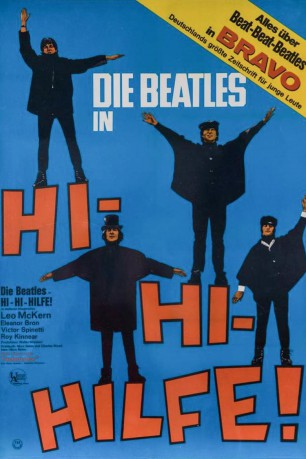
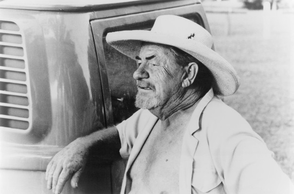
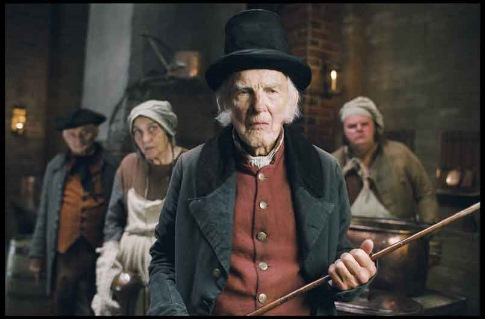

#12213 Hi-Hi-Hilfe!
Alternativ: Help! (Englischer Titel)
 
 IMDB-Wertung: 7.2 / 10
IMDB-Wertung: 7.2 / 10  Tomatometer: 88
Tomatometer: 88  Metascore: 0
Metascore: 0 
Mittelpunkt des Films ist ein verlorengegangener Ring, den der Beatles-Drummer Ringo Starr nicht mehr vom Finger bekommt. Daraus resultiert eine Hexenjagd, die von London über die österreichischen Alpen bis auf die Bahamas führt. Ringo und seine Bandkameraden John, Paul und George werden dabei von Mitgliedern einer religiösen Kultgemeinschaft, einem verrückten Professor und der Londoner Polizei verfolgt.
Jahr: 1965
Dauer: 92 Minuten
FSK:
Land: England Studio: United ArtistsTonspuren: DD2.0 - ,
Untertitel: Englisch,
Auflösung: 720p (1200x720) Größe: 4608 MB
Genre: Komödie, Abenteuer, Musical
Regisseur: Richard Lester
Drehbuch: Marc Behm, Charles Wood
Soundtrack: Paul McCartney, Ken Thorne
Darsteller:
- The Beatles als The Beatles
-  Leo McKern als Clang
- Eleanor Bron als Ahme
- Victor Spinetti als Foot
 Roy Kinnear als Algernon
Roy Kinnear als Algernon John Bluthal als Bhuta
John Bluthal als Bhuta- Patrick Cargill als Superintendent
- Alfie Bass als Doorman
- Warren Mitchell als Abdul
-  Peter Copley als Jeweller
- Thomas Baptiste als (uncredited)
- Ronnie Brody als Priest / Thug (uncredited)
- Mal Evans als Channel Swimmer (uncredited)
- Bob Grant als Cameo (uncredited)
 George Harrison als George (uncredited)
George Harrison als George (uncredited)- Frankie Howerd als Unknown (part cut) (uncredited)
 John Lennon als John (uncredited)
John Lennon als John (uncredited)- Jeremy Lloyd als Restaurant Patron (uncredited)
 Paul McCartney als Paul (uncredited)
Paul McCartney als Paul (uncredited)- Zienia Merton als High Priestess (uncredited)
- Dandy Nichols als Neighbor (uncredited)
- Wendy Richard als Unknown (scene cut) (uncredited)
 Ringo Starr als Ringo (uncredited)
Ringo Starr als Ringo (uncredited) Ian Wilson als (uncredited)
Ian Wilson als (uncredited)- Bruce Lacey als Lawnmower
- Danny Almond als (uncredited)
- Peter Brooks als Customs Officer (uncredited)
- Blake Butler als (uncredited)
- Golda Casimir als Temple Cleaner (uncredited)
- Vera Cook als (uncredited)
- Deborah DeLacey als High Priestess (uncredited)
- Eve Eden als High Priestess (uncredited)
- Rupert Evans als Priest / Thug (uncredited)
- Mary Ford als (uncredited)
- Gretchen Franklin als Neighbor (uncredited)
- Joe Gibbons als (uncredited)
- Bob Godfrey als Priest / Thug (uncredited)
- Stewart Guidotti als (uncredited)
- Jack Hetherington als Commuter (uncredited)
- Jenny Landry als (uncredited)
- Alex MacIntosh als (uncredited)
- Andreas Malandrinos als Austrian Waiter (uncredited)
- John Louis Mansi als Priest / Thug (uncredited)
- Marie-Lise als High Priestess (uncredited)
- Allan Mitchell als Engineer (uncredited)
- Zorenah Osborne als High Priestess (uncredited)
- Sue Reid als (uncredited)
- Patty Roberts als (uncredited)
- Edith Saville als (uncredited)
- Nicole Shelby als Girl (uncredited)
Datei: X:\1965\Hi-Hi-Hilfe! (1965, FSK, 1200x720).mkv seit 30.12.2019
Festplatte: Gemischt-01+Anime
 Es gibt insgesamt 25 Filme in der Gruppe '1965'
Es gibt insgesamt 25 Filme in der Gruppe '1965'